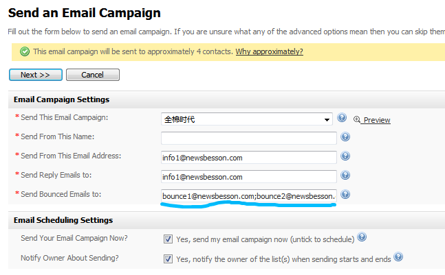

一、安装配置emailmarketer1.安装：解压后有几个目录或者文件要改写权限.一律用 chmod -R 777 目录或文件即可. 2.配置文件在更改了外界环境的情况下（比如更改了ip,主机名,数据库,等等）,需要同步更改emailmarketer的配置文件.文件位于emailmarketer/admin/includes/config.php 3.不能输入中文问题.这时首先要确保一.1和三.3配置正确,然后删除原来的emailmarketer目录（#rm -rf emailmarketer）,重新解压缩安装即可.二、对emailmarketer的修改1.在一次发信任务中使用多个退信人和多个发信人在emailmarketer中，区分发信人和退信人的概念。退信人是一次SMTP对话中，MAIL FROM命令后面跟的那个地址。 发信人是在邮件的头部中，信头From:后面跟的那个地址。 首先用工具postaccountadmin.sh创建多个退信人地址。尽量多，先考虑创建50个。 然后在emailmarketer的Send an Email Campaign任务中填写Send Bounced Emails to时， 同时填写这50个退信人地址，并以英文的分号隔开，如图。  |